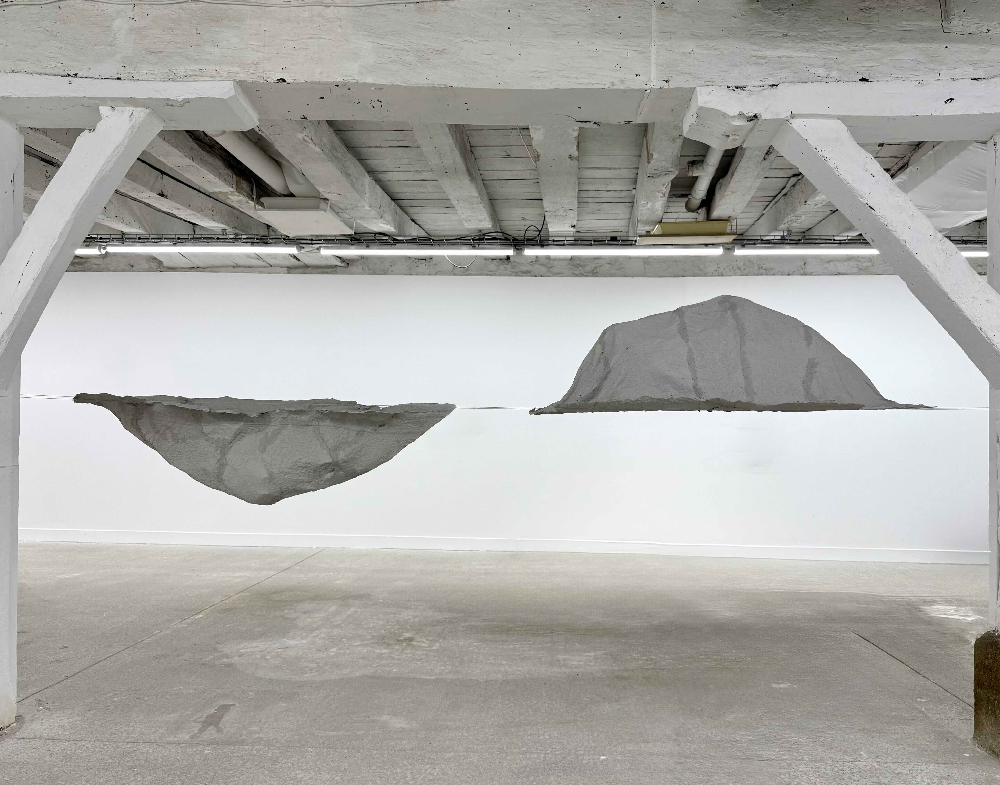
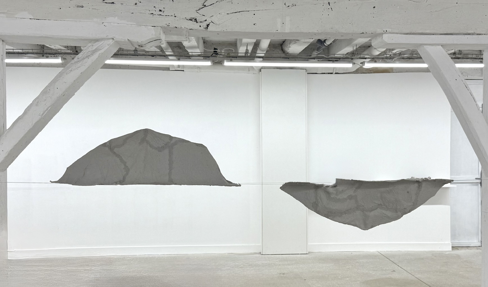
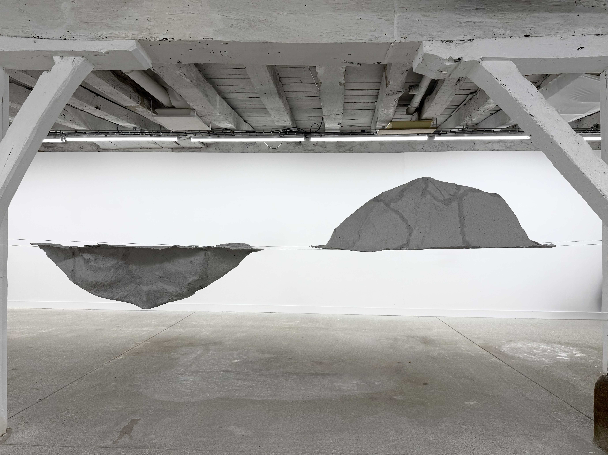
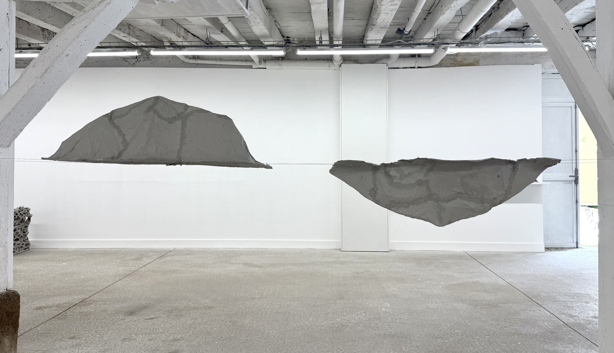
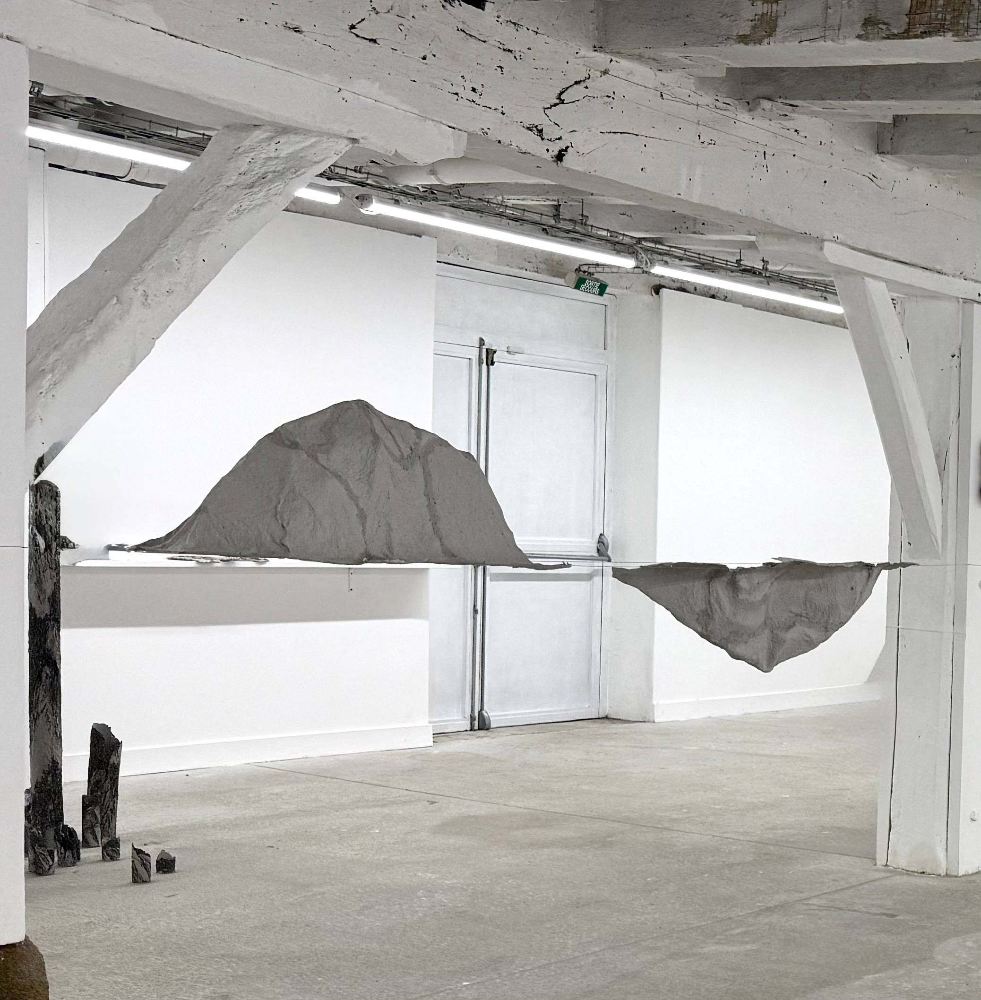
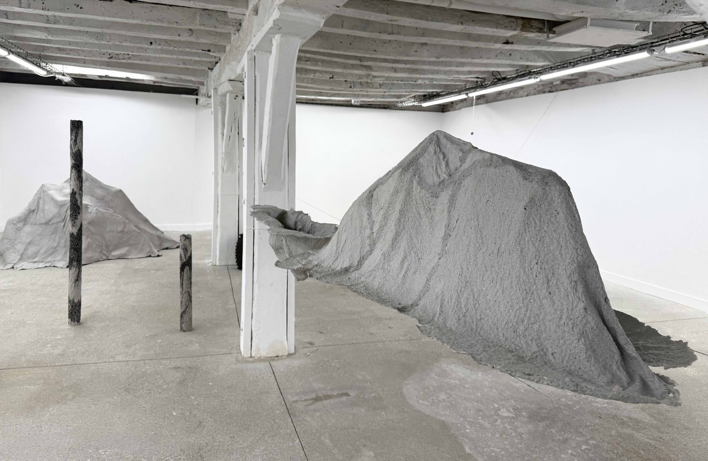

DEUX MONTAGNE
"DEUX MONTAGNE" explore la trace et la mémoire à travers la matérialité du papier de riz. L'installation suspendue crée un dialogue entre le vide et la structure... (这里可以继续根据PDF翻译或精简内容)






